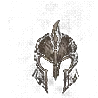

Barbar
Klasse erkunden →Klasse 02Druide
Klasse erkunden → Klasse 03
Klasse 03Totenbeschwörer
Klasse erkunden →Klasse 04Jäger
Klasse erkunden → Klasse 05
Klasse 05
Archiv der Horadrim · KlassenAcht unterschiedliche Wege durch Sanktuario. Wähle eine Klasse, um ihre Ressource, Klassenmechanik, Spielweise sowie Stärken und Besonderheiten kennenzulernen.
Klasse 03Klasse 05